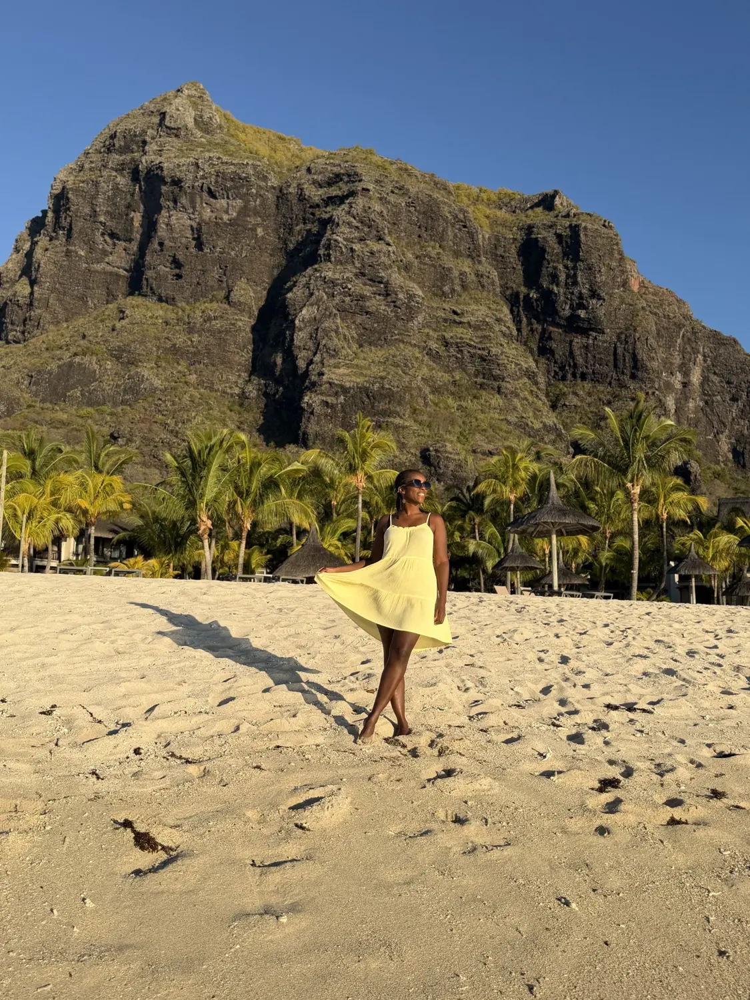
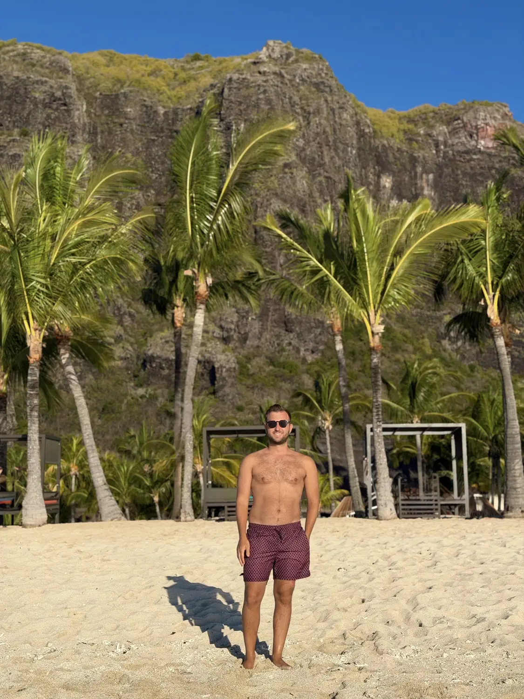

Our favourite01
The beaches of Le Morne
📍 Le Morne peninsula, south-west
By far the best beaches in Mauritius, in our opinion. The whole area is truly beautiful: powder-white sand, crystal-clear water and the huge Le Morne Brabant mountain rising straight up behind the palm trees. It's a UNESCO World Heritage Site, and the view of the mountain from the sand is one you won't forget. If you're up for it, you can also hike to the top. It's a serious climb, so go with a local guide.
Best beaches on the islandMountain backdrop
GetYourGuide
We'd recommend · Our top pick